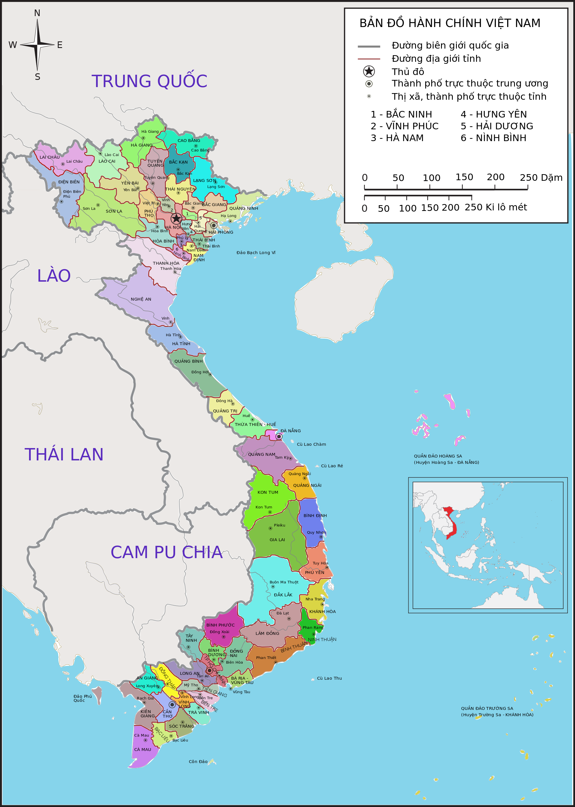

Vietnam Introduction
Tue, 10 Jun 2014. Last updated Thu, 18 Sep 2014 16:17
Located in Southeast Asia, Vietnam is a small and beautiful country with victorious history, profound patriotism and wonderful landscapes. Exploring the beauty of the country with its people and culture should be done once in one’s lifetime.
The Socialist Republic of Vietnam, widely known as Vietnam, is not a strange name to the whole world. The country becomes a nation going places. Although this country is ravaged by a series of wars which causes serious damages, Vietnam in the eyes of the world is nice and peaceful. Vietnam is located in the eastern Indochina Peninsula in Southeast Asia, with Hanoi as its capital. With an area of 331,690 sq. kilometers, to the north of Vietnam is China, to the west is Laos and Cambodia, to the east is Gulf of Tonkin and East Sea, and to the south is Thailand Gulf. The land is a center of trading, cultural interaction, and even conflicts for centuries. It proves that Vietnam has an advantageous position in the region with long coastline and numerous attractions. Having a tropical climate, Vietnam is well known for from magnificent scenery and colorful hill tribes to wide terraced fields in Red River Delta and Mekong River Delta, to majestic mountains, and white sandy beaches. Vietnam, nowadays,is one of should-not-miss destinations in Asia.
Vietnam geography
Vietnam geography has for a long time owned precious benefits nowhere else could be found. Vietnam, officially called The Socialist Republic of Vietnam is situated on the eastern part of Indochina Peninsula in Southeast Asia. Whole Vietnam's territory runs along the eastern coast of the peninsula, in which the mainland extends from the longitude 102°8'E to 109°27'E and between the latitude 8°27'N and 23°23'N. In addition, Vietnam also considers Paracel Islands and Spratly Islands as its territory. The S-shaped country has a north-to-south distance of 1,650 kilometers and is about 50 kilometers wide at the narrowest point. The country also has a land border with China (1,281 km), Laos (2,130 km), Cambodia (1,228 km) and a long coastline, adjacent to the Gulf of Tonkin, South China Sea and Gulf of Thailand. Located in the area of tropical monsoon climate with high humidity of over 80% all the year round, with the diversification in topography, three main regions of Vietnam stretch in different climate zones. The climate in Vietnam varies from North to South, from mountains to plains and coastal. The divisions of Vietnam weather may cause certain effects on travel decisions of tourists.